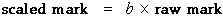

Aim of scaling
Sometimes it is felt that an exam or test is 'too easy' or 'too hard' and that the marks therefore do not give a fair indication of how the students have performed in relation to other classes or to a national expectation. For example, if the internal assessment component of marks for a Bursary subject are out of step with the marks achieved by the class in the external exam, they will be scaled up or down.
Linear transformations
The simplest type of scaling is called a linear scaling or a linear transformation of the marks. The simplest form of scaling multiplies each mark by a constant.

If the constant b is less than 1.0, the marks are reduced by the scaling whereas if b is greater than 1.0, the marks are increased.
A problem with this type of scaling is that its greatest effect is on the highest marks in the class and the lowest marks are affected least. A more flexible type of linear transformation is given by the equation
The effect of these types of transformation are most easily explained in an example.
The jittered dot plot at the bottom of the following diagram shows the raw marks of 20 students in a class. The line represents a linear scaling of these results.
Initially the constant a in the transformation is zero — a mark of 0 stays 0 after the transformation. Drag the red arrow on the right to change the constant b — the dot plot on the left of the diagram shows how the scaled marks are changed.
Click on individual crosses to see how their values are affected by the transformation.
Click on the checkbox Zero unchanged under the diagram to turn it off — this allows you to change both parameters. Drag the two red arrows to adjust the scaling of the marks.
Centre and spread
The centre and spread of the scaled marks can be easily found from those of the original marks. After a transformation of the form:
the mean (and other measures of centre such as the median) are similarly related:
new mean = a + b × old mean
The standard deviation (and other measures of spread that are expressed in the same units as the raw data, such as the inter-quartile range) are related with the equation:
new sd = |b| × old sd
You will never want to use a negative scale factor, b, for scaling marks. However note that if the scale factor, b, is negative, we must change its sign since the standard deviation must be positive.